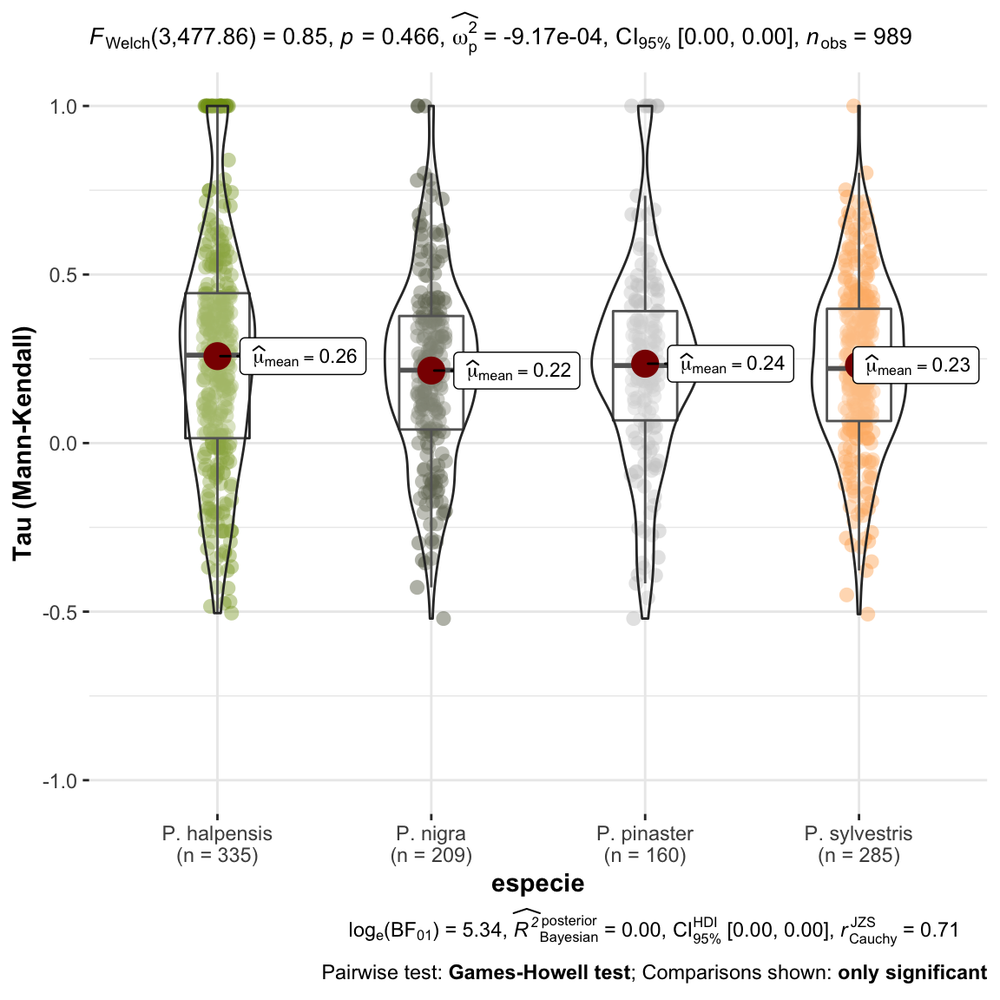
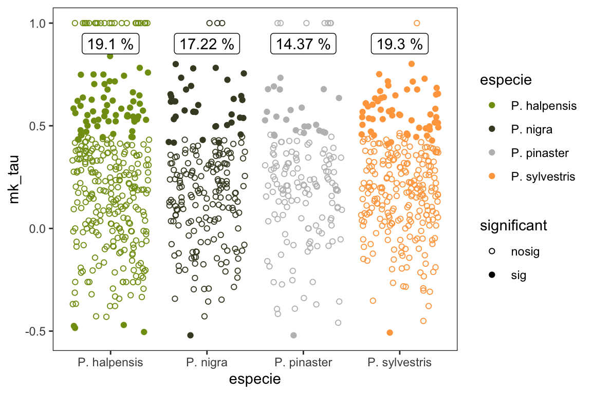
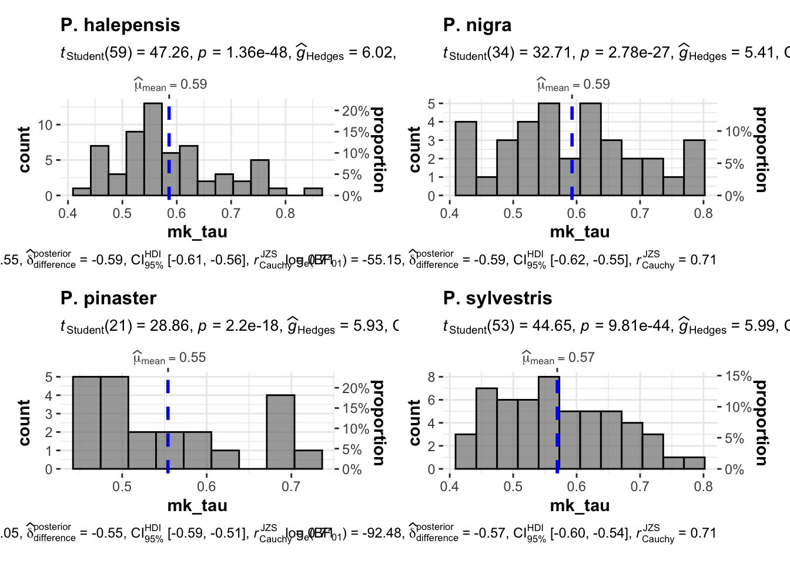
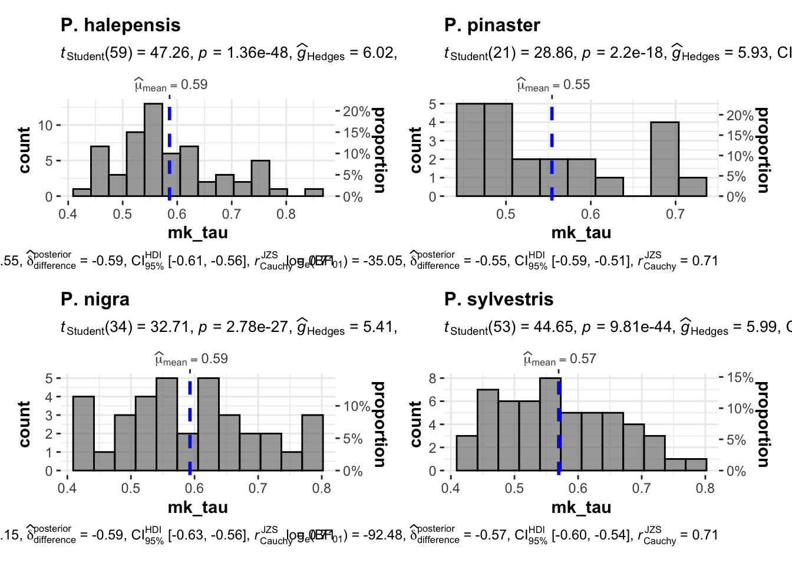

Last updated: 2021-05-27
Checks: 7 0
Knit directory: booksn_ppm/
This reproducible R Markdown analysis was created with workflowr (version 1.6.2). The Checks tab describes the reproducibility checks that were applied when the results were created. The Past versions tab lists the development history.
Great! Since the R Markdown file has been committed to the Git repository, you know the exact version of the code that produced these results.
Great job! The global environment was empty. Objects defined in the global environment can affect the analysis in your R Markdown file in unknown ways. For reproduciblity it’s best to always run the code in an empty environment.
The command set.seed(20210517) was run prior to running the code in the R Markdown file. Setting a seed ensures that any results that rely on randomness, e.g. subsampling or permutations, are reproducible.
Great job! Recording the operating system, R version, and package versions is critical for reproducibility.
Nice! There were no cached chunks for this analysis, so you can be confident that you successfully produced the results during this run.
Great job! Using relative paths to the files within your workflowr project makes it easier to run your code on other machines.
Great! You are using Git for version control. Tracking code development and connecting the code version to the results is critical for reproducibility.
The results in this page were generated with repository version 811898c. See the Past versions tab to see a history of the changes made to the R Markdown and HTML files.
Note that you need to be careful to ensure that all relevant files for the analysis have been committed to Git prior to generating the results (you can use wflow_publish or wflow_git_commit). workflowr only checks the R Markdown file, but you know if there are other scripts or data files that it depends on. Below is the status of the Git repository when the results were generated:
Ignored files:
Ignored: .Rhistory
Ignored: .Rproj.user/
Ignored: data/.DS_Store
Ignored: data/data_raw/
Untracked files:
Untracked: glmulti.analysis.modgen.back
Untracked: glmulti.analysis.mods.back
Untracked: output/patron_nao_ppm_sn.pdf
Untracked: output/pearson_NAO_especies_sn.pdf
Unstaged changes:
Modified: analysis/index.Rmd
Modified: data/coplas2019sn.csv
Modified: output/comparaD_especies.pdf
Modified: output/comparaMK_especies.pdf
Modified: output/comparaMKsig_especies.pdf
Modified: output/comparaPV_especies.pdf
Modified: output/evolucion_temporal_elevacion.pdf
Modified: output/evolucion_temporal_especies.pdf
Modified: output/evolucion_temporal_reg2005.pdf
Modified: output/patron_nao_ppm.pdf
Modified: output/pearson_NAO_especies.pdf
Modified: output/tau_elev.pdf
Note that any generated files, e.g. HTML, png, CSS, etc., are not included in this status report because it is ok for generated content to have uncommitted changes.
These are the previous versions of the repository in which changes were made to the R Markdown (analysis/computeMannKendall.Rmd) and HTML (docs/computeMannKendall.html) files. If you’ve configured a remote Git repository (see ?wflow_git_remote), click on the hyperlinks in the table below to view the files as they were in that past version.
| File | Version | Author | Date | Message |
|---|---|---|---|---|
| Rmd | 811898c | Antonio J Perez-Luque | 2021-05-27 | reorder pine species |
| html | 53bcfcc | Antonio J Perez-Luque | 2021-05-19 | Build site. |
| Rmd | 8718616 | Antonio J Perez-Luque | 2021-05-19 | fix errors |
| html | 11251b2 | Antonio J Perez-Luque | 2021-05-18 | Build site. |
| Rmd | a00d028 | Antonio J Perez-Luque | 2021-05-18 | analysis of trends |
library("tidyverse")
library("here")
library("sf")
library("flextable")
library("Kendall")
library("ggpubr")
library("ggstatsplot")
library("DHARMa")coplas2019 <- read_csv(here::here("data/coplas2019sn.csv")) %>%
filter(sp_abrev != "ppinea")
df <- coplas2019 %>%
filter(!is.na(especie)) %>%
dplyr::select(code, especie, `1993`:`2019`) %>%
pivot_longer(names_to = "year", values_to = "infestacion", `1993`:`2019`) parcelas <- unique(df$code)
df_trend <- c()
for (i in 1:length(parcelas)) {
aux <- df %>%
filter(year > 2004) %>%
filter(code == parcelas[i]) %>% dplyr::select(infestacion)
#MK
mk <- Kendall::MannKendall(aux$infestacion)
#auxNA <- aux$infestacion[!is.na(aux$infestacion)]
#sen <- trend::sens.slope(auxNA)
out <- data.frame(code = parcelas[i],
mk_tau = mk$tau,
mk_pvalue = mk$sl)
#sen = sen$estimates,
#sen_pvalue = sen$p.value)
df_trend <- rbind(df_trend, out)
}
mkdf <- coplas2019 %>%
dplyr::select(
code, elevF, elev_mean, especie) %>%
inner_join(df_trend) %>%
filter(!is.na(especie))
mkdf <- mkdf %>%
mutate(significant = case_when(
mk_pvalue < 0.05 ~ "sig",
TRUE ~ "nosig"
)) %>%
mutate(sig = case_when(
mk_pvalue < 0.05 ~ 1,
TRUE ~ 0))
mkdf$especie <- fct_relevel(mkdf$especie,
"P. halepensis", "P. pinaster",
"P. nigra", "P. sylvestris")plot_comparaTaus <- ggstatsplot::ggbetweenstats(
data = mkdf,
x = especie,
y = mk_tau,
ylab = "Tau (Mann-Kendall)") +
ggplot2::scale_y_continuous(limits=c(-1,1)) +
ggplot2::scale_color_manual(values = colores_pinos)
null device
1 Las tendencias observadas en el nivel de infestación para cada una de las parcelas analizadas se han agrupado por especies y no se observan diferencias en cuanto a la tendencia (\(tau\) de Mann-Kendall), es decir, no se observan tendencias temporales significativamente diferentes entre especies en nuestra serie de datos.
Seguidamente analizamos las tendencias significativas.
pct_sig <- mkdf %>% group_by(especie, significant) %>%
summarise(n=n()) %>%
mutate(pct_tot = round(n/sum(n)*100,2))
pct_sig %>% flextable() %>% autofit()especie | significant | n | pct_tot |
P. halepensis | nosig | 271 | 80.90 |
P. halepensis | sig | 64 | 19.10 |
P. pinaster | nosig | 137 | 85.62 |
P. pinaster | sig | 23 | 14.37 |
P. nigra | nosig | 173 | 82.78 |
P. nigra | sig | 36 | 17.22 |
P. sylvestris | nosig | 230 | 80.70 |
P. sylvestris | sig | 55 | 19.30 |
mksig_plot <- ggplot(mkdf, aes(x=especie, y= mk_tau, shape=significant, fill=especie, colour=especie)) +
geom_point(position = position_jitter(),
size=1.5) +
scale_shape_manual(values = c(1, 19)) +
theme_bw() +
ylab("Mann-Kendall tau") + xlab("") +
theme(panel.grid = element_blank()) +
scale_color_manual(values = colores_pinos) +
geom_label(data=(pct_sig %>% filter(significant == "sig")),
aes(x=especie, y=0.9, label=
paste0(pct_tot, " %")),
fill="white", color = "black") ggsave(filename = here::here("output/comparaMKsig_especies.pdf"),
width = 6, height = 5)
print(mksig_plot)
dev.off()null device
1 mkdf %>%
filter(significant == "sig") %>%
filter(mk_tau > 0) %>%
ggstatsplot::grouped_gghistostats(x=mk_tau,
grouping.var = especie)
# modelo glm
model.tau <- glm(mk_tau ~ elev_mean, data = mkdf, family = "gaussian")
model.tau %>% as_flextable()Estimate | Standard Error | z value | Pr(>|z|) | Signif. | |
(Intercept) | 0.319 | 0.033 | 9.583 | 0.0000 | *** |
elev_mean | -0.000 | 0.000 | -2.545 | 0.0111 | * |
Signif. codes: 0 <= '***' < 0.001 < '**' < 0.01 < '*' < 0.05 < '.' < 0.1 < '' < 1 | |||||
| |||||
(Dispersion parameter for gaussian family taken to be 0.08951858) | |||||
Null deviance: 88.93 on 988 degrees of freedom | |||||
Residual deviance: 88.35 on 987 degrees of freedom | |||||
# visualiza
tau_elev <- visreg::visreg(model.tau, gg=TRUE,
xlab = "Elevation (m)",
ylab = "Mann-Kendall tau") +
theme_bw() +
geom_point(data=(mkdf %>% filter(sig == 1)),
aes(x=elev_mean, y=mk_tau), color = "black", size=1.2)ggsave(filename = here::here("output/tau_elev.pdf"),
width = 9, height = 9, units = "cm")
print(tau_elev)
| Version | Author | Date |
|---|---|---|
| 11251b2 | Antonio J Perez-Luque | 2021-05-18 |
dev.off()null device
1 tauspos <- mkdf %>% filter(mk_tau >= 0)
tp <- glm(sig ~ elev_mean, data = tauspos, family="binomial")
tp %>% as_flextable()Estimate | Standard Error | z value | Pr(>|z|) | Signif. | |
(Intercept) | -0.889 | 0.295 | -3.011 | 0.0026 | ** |
elev_mean | -0.000 | 0.000 | -1.411 | 0.1581 | |
Signif. codes: 0 <= '***' < 0.001 < '**' < 0.01 < '*' < 0.05 < '.' < 0.1 < '' < 1 | |||||
| |||||
(Dispersion parameter for binomial family taken to be 1) | |||||
Null deviance: 826.8 on 792 degrees of freedom | |||||
Residual deviance: 824.8 on 791 degrees of freedom | |||||
visreg::visreg(tp,
xlab = "Elevation (m)",
ylab = "Prob. tau pos. sig.",
scale = "response",
ylim=c(0,1))
| Version | Author | Date |
|---|---|---|
| 11251b2 | Antonio J Perez-Luque | 2021-05-18 |
sessionInfo()R version 4.0.2 (2020-06-22)
Platform: x86_64-apple-darwin17.0 (64-bit)
Running under: macOS Catalina 10.15.3
Matrix products: default
BLAS: /Library/Frameworks/R.framework/Versions/4.0/Resources/lib/libRblas.dylib
LAPACK: /Library/Frameworks/R.framework/Versions/4.0/Resources/lib/libRlapack.dylib
locale:
[1] en_US.UTF-8/en_US.UTF-8/en_US.UTF-8/C/en_US.UTF-8/en_US.UTF-8
attached base packages:
[1] stats graphics grDevices utils datasets methods base
other attached packages:
[1] DHARMa_0.3.3.0 ggstatsplot_0.7.2 ggpubr_0.4.0 Kendall_2.2
[5] flextable_0.6.3 sf_0.9-7 here_1.0.1 forcats_0.5.1
[9] stringr_1.4.0 dplyr_1.0.4 purrr_0.3.4 readr_1.4.0
[13] tidyr_1.1.2 tibble_3.0.6 ggplot2_3.3.3 tidyverse_1.3.0
[17] workflowr_1.6.2
loaded via a namespace (and not attached):
[1] readxl_1.3.1 uuid_0.1-4
[3] pairwiseComparisons_3.1.3 backports_1.2.1
[5] systemfonts_1.0.0 plyr_1.8.6
[7] splines_4.0.2 gmp_0.6-2
[9] TH.data_1.0-10 kSamples_1.2-9
[11] ipmisc_5.0.2 rstantools_2.1.1
[13] digest_0.6.27 SuppDists_1.1-9.5
[15] foreach_1.5.1 htmltools_0.5.1.1
[17] magrittr_2.0.1 memoise_2.0.0
[19] doParallel_1.0.16 paletteer_1.3.0
[21] openxlsx_4.2.3 modelr_0.1.8
[23] officer_0.3.16 sandwich_3.0-0
[25] colorspace_2.0-0 rvest_0.3.6
[27] ggrepel_0.9.1 haven_2.3.1
[29] xfun_0.20 crayon_1.4.1
[31] jsonlite_1.7.2 lme4_1.1-26
[33] zeallot_0.1.0 iterators_1.0.13
[35] survival_3.2-7 zoo_1.8-8
[37] glue_1.4.2 gtable_0.3.0
[39] emmeans_1.5.4 MatrixModels_0.4-1
[41] statsExpressions_1.0.1 car_3.0-10
[43] Rmpfr_0.8-2 abind_1.4-5
[45] scales_1.1.1 mvtnorm_1.1-1
[47] DBI_1.1.1 rstatix_0.6.0
[49] PMCMRplus_1.9.0 Rcpp_1.0.6
[51] performance_0.7.2 xtable_1.8-4
[53] units_0.6-7 foreign_0.8-81
[55] httr_1.4.2 ellipsis_0.3.1
[57] farver_2.0.3 pkgconfig_2.0.3
[59] reshape_0.8.8 qgam_1.3.2
[61] multcompView_0.1-8 sass_0.3.1
[63] dbplyr_2.1.0 labeling_0.4.2
[65] effectsize_0.4.4-1 tidyselect_1.1.0
[67] rlang_0.4.10 later_1.1.0.1
[69] ggcorrplot_0.1.3 munsell_0.5.0
[71] cellranger_1.1.0 tools_4.0.2
[73] cachem_1.0.4 cli_2.3.0
[75] generics_0.1.0 broom_0.7.4
[77] evaluate_0.14 fastmap_1.1.0
[79] BWStest_0.2.2 yaml_2.2.1
[81] rematch2_2.1.2 knitr_1.31
[83] fs_1.5.0 zip_2.1.1
[85] nlme_3.1-152 WRS2_1.1-1
[87] pbapply_1.4-3 mime_0.10
[89] whisker_0.4 xml2_1.3.2
[91] correlation_0.6.1 gap_1.2.2
[93] compiler_4.0.2 rstudioapi_0.13
[95] curl_4.3 e1071_1.7-4
[97] ggsignif_0.6.0 reprex_1.0.0
[99] statmod_1.4.35 bslib_0.2.4
[101] stringi_1.5.3 highr_0.8
[103] parameters_0.13.0 gdtools_0.2.3
[105] lattice_0.20-41 Matrix_1.3-2
[107] visreg_2.7.0 nloptr_1.2.2.2
[109] classInt_0.4-3 vctrs_0.3.6
[111] pillar_1.4.7 lifecycle_1.0.0
[113] mc2d_0.1-18 jquerylib_0.1.3
[115] estimability_1.3 data.table_1.13.6
[117] insight_0.14.0 patchwork_1.1.1
[119] httpuv_1.5.5 R6_2.5.0
[121] promises_1.2.0.1 KernSmooth_2.23-18
[123] rio_0.5.16 BayesFactor_0.9.12-4.2
[125] codetools_0.2-18 boot_1.3-26
[127] MASS_7.3-53 gtools_3.8.2
[129] assertthat_0.2.1 rprojroot_2.0.2
[131] withr_2.4.1 multcomp_1.4-16
[133] mgcv_1.8-33 bayestestR_0.9.0
[135] parallel_4.0.2 hms_1.0.0
[137] grid_4.0.2 minqa_1.2.4
[139] coda_0.19-4 class_7.3-18
[141] rmarkdown_2.6.6 carData_3.0-4
[143] git2r_0.28.0 shiny_1.6.0
[145] lubridate_1.7.10 base64enc_0.1-3